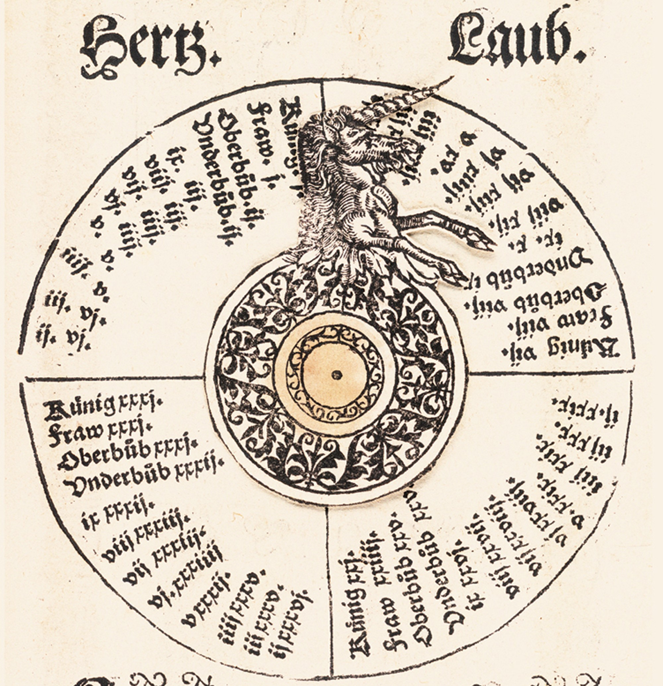

Functions and Uses
Volvelles are small, geometrically cut pieces of paper that are fastened to a page of a book and create an interactable figure, tool, or chart. Most commonly used for astronomy and mapmaking, these tools allow the common man to have smaller, cheaper, and more transportable forms of intruments normally only available to researchers.
Volvelles have many uses, with the first ones being used to chart the universe, measure sun and moon phases, and other location-based sciences [3].Later uses include constellation diagrams and charts, calendars, nautical charts, mathematical calculators, literary and grammar devices, and children's books [4].
Volvelles are used by spinning the small, often fragile paper components and lining them up with figures on the page. These were used to create modifiable charts that can be helpful in more than one situation. For example, both the Astrolabe and volvelle on the right were used by lining up with the figure to the current time, which would then give specific altitudes of celestial bodies and furthermore the latitude of the user [5]. This could be used for navigation and sky-watching, made much easier by these portable tools.
This volvelle was used in conjunction with a deck of specialized cards to provide "moral lessons" to the user [6].